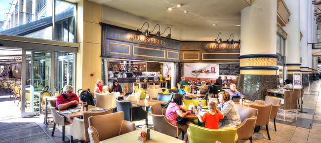
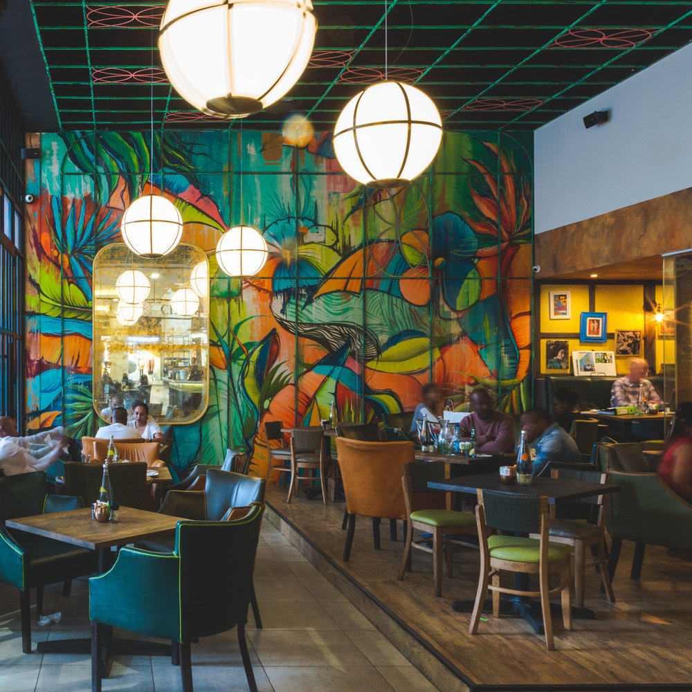
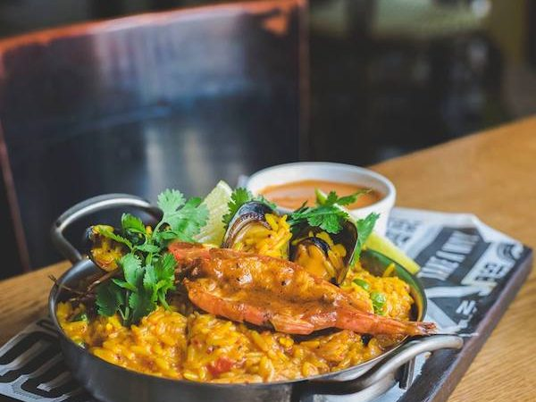
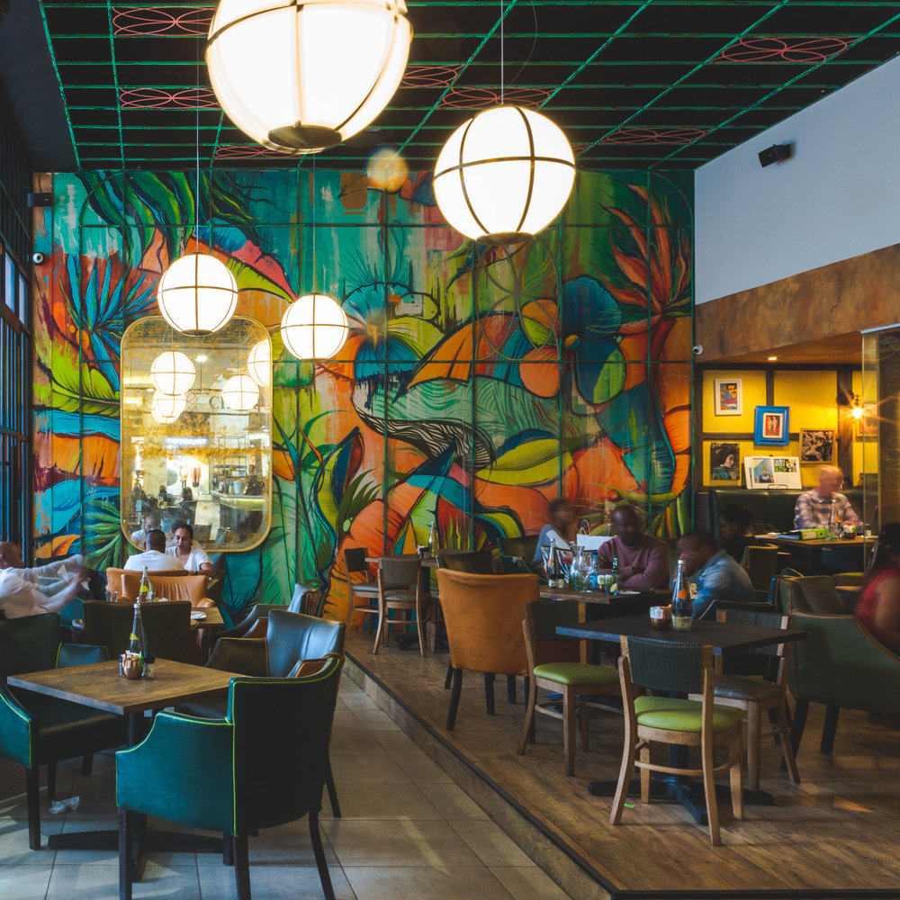
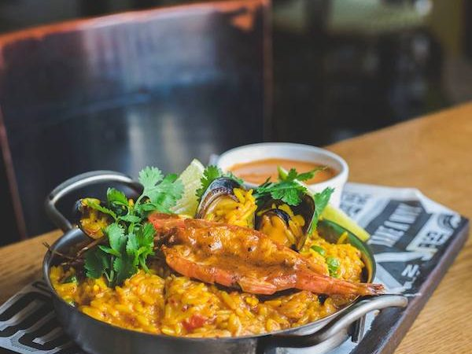

CIRCUS CIRCUS
A part of the Durban eating culture since 1994, Circus Circus is a restaurant and cafe, offering customers a wide variety of meals: salads, steaks, seafood, pastas and curries to name a few of the choices on the menu. Or if you prefer, pop in for a cortado, flat white, cappuccino or the like, perfectly brewed by one of our baristas. Circus Circus is an experience of service and quality with a focus on providing exceptional value for money in a warm and inviting atmosphere. Circus Circus now boasts 4 outlets in Kwa-Zulu Natal.

